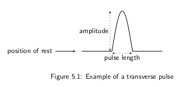

| Gravity and Mechanical Energy | ~ | Up | ~ |
| Pulse, pulse length and amplitude | |
| Speed | |
| Exercises |

| $v=\dfrac{d}{t}$ |
| Important: The pulse speed depends on the properties of the medium and not on the amplitude or pulse length of the pulse. |
Exercise 1
Exercise 2
Exercise 3
| $s$ | $m$ |
| 1 | 4,9 |
| 2 | 19,6 |
| 3 | 44,1 |
| 4 | 78,4 |
| 5 | 122,5 |
| 6 | 176,4 |
| 7 | 240,1 |
| 8 | 313,6 |
| 9 | 396,9 |
| 10 | 490,0 |
It is the result of applying a force to an object along a distance:
$KE = F\Delta x = ma\Delta x$
We know that $v^2_f = v^2_i + 2a\Delta x$. If we suppose that the object is
resting then:
$v^2 = 2a\Delta x \Rightarrow a\Delta x = \dfrac{1}{2}v^2$
In conclusion:
| $KE = \dfrac{1}{2}mv^2 \Rightarrow N \cdot m = J$ |
When we pull an object in the opposite direction of a force field (e.g. gravity), we need to use a contra-force for drawning it a distance. Then if we release the object of our contra-force the object fall down toward the centre of the force field.
Before releasing the object its kinetic energy is 0, because is velocity is 0; but we have exert a force against the field along a distance ($F\Delta x$). As result we say that the object has a potential energy
| $PE = F\Delta x = ma\Delta x \Rightarrow N \cdot m = J$ |
| $U = PE + KE = ma\Delta x + \dfrac{1}{2}mc^2$ |
The total amount of mechanical energy in a closed system remains constant.
Exercise 3
Exercise 4
Exercise 5
Exercise 1
Exercise 2
Exercise 3
Exercise 4
Exercise 5
A pulse covers a distance of !!d! $m$ in !!t! $s$ on a heavy rope. Calculate the pulse speed.
####
Data:
$d =$ !!d! $m$
$t =$ !!t! $s$
Calculus:
$v = \dfrac{d}{t} =$ !!v! $m \cdot s^{-1}$
A pulse has a speed of !!v! $cm \cdot s^{-1}$ . How far does it travel in !!t! seconds?
####
Data:
$v =$ !!v! $cm \cdot s^{-1}$
$t =$ !!t! $s$
A pulse has a speed of !!v! $m \cdot s^{-1}$ . How long does it take to cover a distance of !!d! $cm$?
####
Data:
$v =$ !!v! $m \cdot s^{-1}$
$d =$ !!d! $cm =$ !!d2! $m$